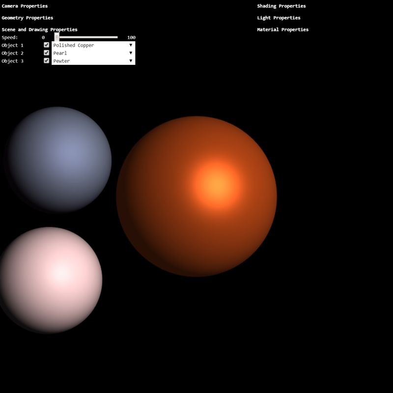

New Jersey Institute of Technology
Interactive Computer Graphics CS 438 / CS 657
TASKS
There are 3 Tasks. The html-js file pair is named accordingly:
(task2.html, task2.js). Additionally, the WebGPU shader code is in
resources/webgpu-task2.wgsl.
Search for TODO_A2 in task2.js and resources/webgpu-task2.wgsl to find the location where to implement the tasks. You will also find the instructions for each task as comments in the code.
Hints:
-
Note that all angle-values from the GUI-sliders are given in degrees. Low-level functions, like
Math.sin(x), however, take radians as input. Convert degrees to radians usinglet rad = radians(deg); or let rad = deg * Math.PI / 180.0; - You can create transformation matrices using the helper-functions in 'math.js'. Recall that to compute a transformation matrix the order matters! Also, note that the functions in 'math.js' take angles in degrees as input.
-
In application code, you can multiply a 4x4 matrix with a 3d point/vector by extending the
point/vector to a 4d point/vector using the
vec4structure, e.g.,let a = vec3(); // defines a 3d structure
let b = vec4(a,1); // gives a 4d point with first 3 components taken from a. -
You can get a 3d point/vector from a 4d structure using the
splice(0,3)method, e.g.,let a = vec4(); // defines a 4d structure
let b = a.splice(0,3); // obtains first 3 components of a and provides a 3d structure -
Similarly, in WGSL shader code, you can compose vectors and access components, e.g.,
let a = vec4<f32>(0.0, 0.0, 0.0, 1.0);
let b = a.xyz; - Start early! This assignment is more involved.
Notes:
- The documentation (below the WebGPU canvas) of your solution also contributes to the grading. If you do not document your work, points will be deducted.
- In tasks where your creativity is asked, you are not judged for your artistic skills. Only technical issues influence the grading.
- If you have questions regarding the assignment, post them on the CANVAS forum where they will be answered. Do not write emails with individual questions!
Task 1a: View-Transform (6 points)
Implement the view-transformation matrix of the camera. Given the values of
rotx, roty, rotup, dist, implement a simple control of the location of the camera by
computing a transformation matrix for the eye location and the up vector.
To create this transformation, you would need to multiply a number of transforms, and subsequently
use it to transform the eye and up.
E.g., (be careful, pseudo-code here):
eye = M * [0,0,0,1].splice(0,3);
up = M * [0,1,0,0].splice(0,3);
Hint: for better orientation during implementation, turn on the coordinate frame axes (checkbox 'Coord. Frame') and turn off (checkbox in front of the objects) Object 1.
Having the position of the eye and the up vector, you can use the
lookAt function to determine the view-transform from eye, up, at!
Task 1b: Perspective Projection (2 points)
Using the given values of dist, fovy, near, far, implement the perspective
projection matrix and replace the standard projection matrix below.
Task 1c: Orthographic Projection (4 points)
Using the given values, implement the orthographic projection matrix and replace the standard
projection matrix below. Derive the values for left, right, top, bottom from
dist and
fovy. Use the current near and far slider values for the
orthographic depth range as well.
Task 2a: Transformation to View-Space (4 points)
Hint: Task 2a is to be implemented in the file resources/webgpu-task2.wgsl using WGSL.
Transform the position of the vertex a_position to the view space using the model-view
matrix. Store the transformed position in the vertex output field out.pos. Next, transform the
normal-vectors a_normal to
the view space using the transpose-inverse-model-view matrix denoted here as u_normalmat.
Store the transformed normal in the output field out.normal.
Task 2b: Phong Reflection Model (6 points)
Hint: Task 2b is to be implemented in the file resources/webgpu-task2.wgsl using WGSL.
Implement the Phong reflection model (Phong lighting). Compute the diffuse, specular, and ambient
terms using the input arguments
vec3 N; // normalized normal vector of the surface point
vec3 L; // normalized vector towards the light source
float r; // distance to the light source
Task 3: Material Design (3 points)
Create three new materials and add them to the material manager object. Experiment with the sliders in the GUI and be creative! There is no right or wrong material setting for Phong Model, just try to make it look as good as possible.- Create a metal-like material, for instance "Polished Copper".
- Create a glossy material, e.g., "Pearl".
- Create a matte material, for instance "Pewter".
Results
Your result should look similar to the image below:

WebGPU Canvas
WebGPU: waiting for initialization...
Documentation
TODO_A2: write a short report here.
- Task 1a — View Transform: To control the camera I built a matrix chain that first rotates using the X, Y, and Z sliders, then translates the camera out along the Z axis by dist. From that combined matrix I extracted the eye position (by transforming the origin point) and the up direction (by transforming [0,1,0] as a direction vector with w=0). Then I passed those into lookAt with the origin as the target, so the camera always looks at the center of the scene.
- Task 1b — Perspective Projection: Used the perspective() helper from math.js, passing in the fovy slider value, the canvas aspect ratio, and the near/far clip values. So basically what this does is map the view frustum into clip space and the wider the fovy, the more you can see, and things farther away appear smaller.
- Task 1c — Orthographic Projection Derived the view volume bounds from dist and fovy using trig — half-height = dist * tan(fovy/2), then half-width from the aspect ratio. The key difference from perspective is that there's no depth foreshortening, so objects don't shrink as they get farther away.
- Task 2a — View-Space Transform : In the vertex shader, I multiplied the vertex position by u_modelview to move it into view space. For normals, I used u_normalmat (the transpose-inverse of model-view) with w=0 since normals are directions. This keeps normals correct even when non-uniform scaling is applied.
- Task 2b — Phong Lighting : Implemented the three Phong terms in the fragment shader. Ambient is just the base color that's always there. Diffuse uses dot(N, L) to scale the brightness based on the angle to the light. Specular reflects the light vector over the normal and checks how close that is to the view direction — the shininess exponent controls how tight the highlight is.
- Task 3 — Materials: Created three material, titanium as the metal, marble for the glossy, and sand as the matte. Each one was is tuned using the ka, kd, ks values from the old materials and the shininess exponent to get the right look.
Material Colors
- Titanium I tried going for cool dark grey with a blue tint. The High specular give it that hard metallic look, so the ks is high so the highlight is sharp and clean.
- Marble It's warm cream white with a high diffuse to get that bright smooth surface and moderate specular so there's a soft glossy sheen to be duller than metal.
- Sand — warm yellowish tan. Almost zero specular and a very low shininess exponent so basically no highlight at all. The idea is that sand scatters light in all directions and doesn't really reflect it, so it looks rough and gritty. I started with stone first but it just felt whatever, too plain and grey. But any color after killing the specular in phoge looks matte.
It should list what you have implemented, as well as a brief discussion and your conclusions.
Also
add as many comments in your code as possible---it will help us in judging your work.
Assignment Validation & Authorship
To ensure academic integrity and verify original authorship and mastery of the material, exams will include specific Validation Question. Programming assignments are assessed on both code functionality and your understanding of the implementation. To verify authorship, exams will include specific "Validation Questions" related to the logic and structure of your submitted assignments.
Penalty Policy: An incorrect answer to a validation question demonstrates a gap in understanding the submitted work. For each validation question answered incorrectly, 10% of the total points for the corresponding assignment will be retroactively deducted from that assignment's grade.
This deduction applies regardless of the original score received on the assignment. It is your responsibility to ensure you can explain and reproduce the logic of any code you submit.
Honor Code
A set of ethical principles governing this course:
- It is okay to share information and knowledge with your colleagues, but
- It is not okay to share the code,
- It is not okay to post or give out your code to others (also in the future!),
- It is not okay to use code from others (also from the past) for this assignment!
Any noticed disregard of these principles will be sanctioned as per the Academic Integrity Policy of NJIT (see below).
Academic Integrity / Institutional Policies
Academic Integrity is the cornerstone of higher education and is central to the ideals of this course and the university. Cheating is strictly prohibited and devalues the degree that you are working on. As a member of the NJIT community, it is your responsibility to protect your educational investment by knowing and following the academic code of integrity policy that is found at: http://www5.njit.edu/policies/sites/policies/files/academic-integrity-code.pdf.
Please note that it is the professional obligation and responsibility of the instructor to report any academic misconduct to the Dean of Students Office. Any student found in violation of the code by cheating, plagiarizing or using any online software inappropriately will result in disciplinary action. This may include a failing grade of F, and/or suspension or dismissal from the university. If you have any questions about the code of Academic Integrity, please contact the Dean of Students Office at dos@njit.edu.
Good Luck!
Instructor: Dr. Przemyslaw Musialski, Associate Professor
Email: przemyslaw.musialski@njit.edu
Copyright (c) 2019-2026 Przemyslaw Musialski